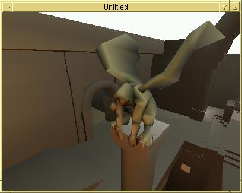
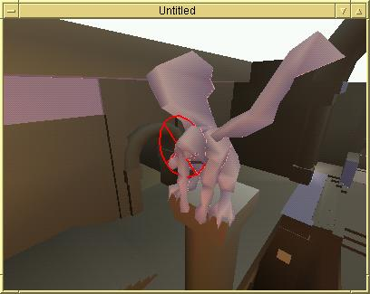
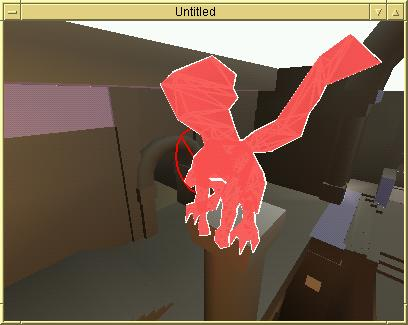
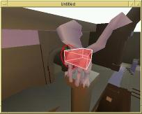
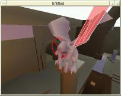
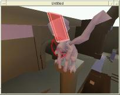
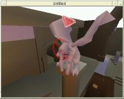
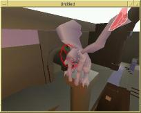
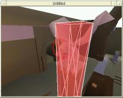

This is a short page to illustrate some concepts relating to triangle meshes in q3. It was put together to help answer a Usenet post regarding such meshes.
|  |
| Gargoyle from q3dm7. This image was captured using a q3 map rendering tool I developed to decode the q3 .bsp file format. |
|  |
|
Selected leaf. I have selected the leaf containing the gargoyle by
pointing at the gargoyle and clicking on it. A ray is traced from the
viewer through the BSP tree in the direction of the mouse click. BSP
leaves are walked along the ray, and brushes in each leaf are intersected
with the ray to check for collision. This is a form of ray tracing, only
not in the rendering sense, but in the collision detection sense.
The ray intersected a brush representing the gargoyle's head; the brush is shown in a later image. Highlighted in purple are the faces referenced by the leaf containing the ray/brush intersection; the red glyph indicates the point of intersection. |
|  |
| Highlighted triangle mesh. After selecting the gargoyle, I cycled through the faces in the selected leaf and stopped when the gargoyle was highlighted. The gargoyle is a single face with type 3 (triangle mesh). Triangle meshes consist of an unordered collection of vertices with an associated but separate list of vertex indices that indicate triangle connectivity. |
|       |
| Six images showing highlighted brushes. Finally, I cycled
through the brushes in the selected leaf to show in particular the brushes
that bound the gargoyle. Notice how the brushes form a very rough bound.
A larger brush surrounds the pillar below the gargoyle in addition to the gargoyle itself. This brush blocks players in particular, helping them navigate around the pillar without getting stuck easily. |